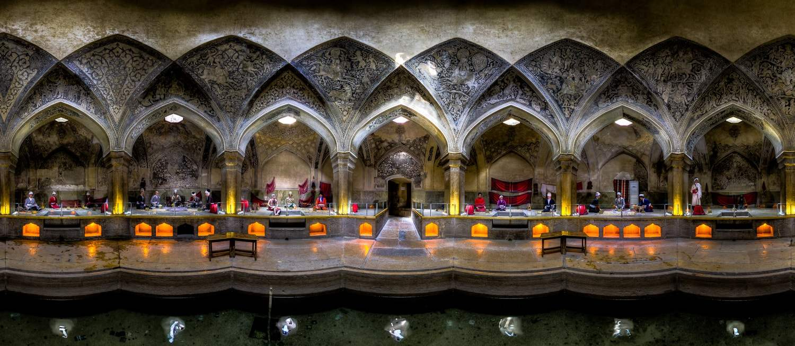
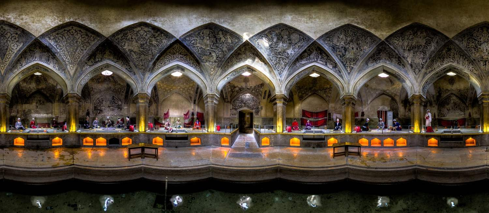

中国自古地大物博，建筑艺术源远流长。不同地域和民族其建筑艺术风格等各有差异，但其传统建筑的组群布局、空间、结构、建筑材料及装饰艺术等方面却有着共同的特点， 区别于西方，享誉全球。中国古代建筑的类型很多，主要有宫殿、坛庙、寺观、佛塔、民居和园林建筑等。
在经过丝绸之路的中国城市中，西安和敦煌。
西安，古称长安、镐京，是陕西省会、副省级市、关中平原城市群核心城市、丝绸之路起点城市、"一带一路"核心区、中国西部地区重要的中心城市、中国四大古都之一， 联合国科教文组织于1981年确定的“世界历史名城”，美媒评选的世界十大古都之一。敦煌是丝绸之路的节点城市，以“敦煌石窟”、“敦煌壁画”闻名天下，是世界遗产莫高窟和汉长城边陲玉门关、阳关的所在地，是国家历史文化名城。
以下是两座城市的著名建筑介绍。
中亚国家乌兹别克斯坦有着悠久的历史，玄奘和张骞都曾到过这里；伴随着丝绸之路的兴盛，这个国家的多个城市也因此而繁荣，我国的一些古书籍也曾描述过丝路上三座古城希瓦、布哈拉和撒马尔罕的不凡魅力。 在这里，精美的古代建筑遗产仍像千百年前一样，静静矗立着等待世人发现它们的美。
伊朗伊斯兰共和国（英语：Islamic Republic of Iran，波斯语：جمهوری اسلامی ایران），简称伊朗。位于西亚，属中东国家。东邻巴基斯坦和阿富汗，与土库曼斯坦接壤，西北与阿塞拜疆和亚美尼亚为邻， 西界土耳其和伊拉克。中北部紧靠里海、南靠波斯湾和阿拉伯海。国土面积约1648195平方公里，世界排名第十八。
在伊朗，伊斯兰教（什叶派）为国教，98．8%的居民信奉伊斯兰教，其中91%为什叶派，7．8%为逊尼派。而其国家的建筑风格主要也是伊斯兰建筑。
伊斯兰建筑（阿拉伯语：عمارة إسلامية），是伊斯兰艺术的重要组成部分和主要表现形式之一，涵盖了从伊斯兰教兴起至21世纪在穆斯林地区和伊斯兰文化圈内形成的各种建筑风格与样式。伊斯兰建筑的基本类型包括清真寺、陵墓、宫殿、 要塞、学校和各类文化设施，其风格影响并带动了伊斯兰文化圈内各种建筑结构的设计与建造。

 


繁杂、多变、细致、流丽，传统的伊朗建筑发展至今已近两千年，或许外界仍对这中东国度多有揣测，但当中的建筑之美始终令世界无可忽视。
其中穹顶的演变乃是波斯建筑伟大成就之一，自公元224年始人民已找到建造令人满意的穹顶之法；后来发展方向越加繁杂，或穹顶内再建圆顶，或以瓷砖及金银作原料，发展至今仍从未止息。
巨大的穹顶象征天空，在清真寺及学校等极为常见，建筑风格往往以朴素的外墙配以内在的雕楼玉砌，亦对照波斯民族的宗族信义。
若仔细观察穹顶图案，会发现再繁杂的图案均由不断重复的基本图形组成，这种由几何逐级而上的建筑风格可追索至伊斯兰民族对哲学的思想，一种称作原子论的理解。
古代的穆斯林认为，物质、时空等概念都由不可再分割的微小原子所组成，就是像化学元素的东西，延伸至建筑后便以细块的瓷砖瓦片进行拼贴呈现，将微小连接成强大整体。
欧洲建筑是分布在欧洲的古代建筑的统称。其风格在建造形态上的特点是：简洁、线条分明、讲究对称、运用色彩的明暗,鲜淡来对视觉进行冲击.在意态上则使人感到壅容华贵.典雅,富有浪漫主义色彩。 欧洲建筑风格包括：巴洛克建筑、法国古典主义建筑、哥特式建筑、古罗马建筑、浪漫主义建筑、罗曼建筑、洛克克风格、文艺复兴建筑。
欧洲是古代丝绸之路的终点站，是完全不同于起始站中国的另一个世界。古代丝路在欧洲比较有名的城市分别是索契(俄罗斯)、雅典、罗马、威尼斯等，下面是以上城市的相关建筑介绍。
俄罗斯建筑，指的是具有俄罗斯民族特点的建筑，形成于12世纪末。
俄罗斯民族早先居住在森林周围，就地取材搭建居所，木材资源又取之不尽，传统建筑是以木造为主。自10世纪末接受基督教后受了拜占庭影响开始出现石造建筑，但多用於公共建筑。然而，俄罗斯人传统的木造建筑技术仍保留下来，混用於石造建筑上。
石造建筑，形式上则是典雅大方高阔端正，这样的主建筑结构搭配多个矗立上端的半圆形顶盖。这种建筑形式最主要目的，就是一切以神为依归，塑造庄重典雅伟大高尚的气氛，让信徒心生崇敬之感。在那个多神信仰的时代，对於一般老百姓， 的确有此神胜过一切的感受。
归纳下来，可以发现俄罗斯传统建筑的几个特色：从木结构发展出来的技巧，如层次叠砌架构与大斜面帐幕式尖顶，还有衍生而来的外墙民俗浮雕；另外，独立的塔形结构与堆砌成团的战盔形剖面装饰则是时代背景下的产物。
建筑是人文的表现，它反映了一个国家、一个社会的形象。俄罗斯建筑历史恢宏，其所反映的人文精神即是其国家性格特征的体现。从一定层面上讲，俄罗斯国家的建筑艺术有着与众非凡的艺术魅力，且大多以宗教建筑为凸显 ， 一些有着特殊建筑造型的“洋葱顶”、“帐篷顶”建筑就像欧洲古老教堂尖顶上的那个万古不语 的十字架一样，便是一种无言的象征或意象。 俄罗斯城市特色浓郁，在其富饶的疆土上屹立着许多俄式建筑的身影，形成了俄罗斯特有的建筑风格，富有了极具美感和动感的建筑形制与装饰特点 。


雅典是希腊共和国的首都和最大的城市，其建筑背后是古希腊的建筑风格，在此，我们总地以介绍古希腊的建筑风格为主。
古代希腊是欧洲文化的发源地，古希腊建筑是欧洲建筑的先河。古希腊的发展时期大致为公元前8～前1世纪，即到希腊被罗马兼并为止。古希腊建筑的结构属梁柱体系，早期主要建筑都用石料。 限于材料性能，石梁跨度一般是4～5米，最大不过7～8米。石柱以鼓状砌块垒叠而成，砌块之间有榫卯或金属销子连接。墙体也用石砌块垒成，砌块平整精细，砌缝严密，不用胶结材料。虽然古希腊建筑形式变化较少，内部空间封闭简单， 但后世许多流派的建筑师，都从古希腊建筑中得到借鉴。
古代罗马建筑是建筑艺术宝库中的一颗明珠，它承载了古希腊文明中的建筑风格，凸显地中海地区特色，同时又是古希腊建筑的一种发展。古罗马在公元前2世纪成为地中海地区强国， 与此同时罗马人也开始了罗马的建设工程。到公元1世纪罗马帝国建立时，罗马城已成为与东方长安城齐名的世界性城市。其城市基础设施建设已经相对完善，城市逐步向艺术化方向发展。 罗马建筑与其雕塑艺术大相径庭，以建筑的对称、宏伟而闻名世界。
古罗马建筑的类型很多，有罗马万神庙、维纳斯和罗马庙 ，以及巴尔贝克(在今黎巴嫩)太阳神庙等宗教建筑，也有皇宫、剧场、角斗场、浴场以及广场和巴西利卡(长方形会堂)等公共建筑。 居住建筑有内庭式住宅、内庭式与围柱式院相结合的住宅，还有四、五层公寓式住宅。古罗马世俗建筑的形制相当成熟，与功能结合得很好。罗马帝国各地的大型剧场，观众席平面呈半圆形，逐排升起，以纵过道为主、横过道为辅。 观众按票号从不同的入口、楼梯，到达各区座位。人流不交叉，聚散方便。舞台高起，前有乐池，后面是化妆楼，化妆楼的立面便是舞台的背景，两端向前凸出，形成台口的雏形，已与现代大型演出性建筑物的基本形制相似。 古罗马多层公寓常用标准单元。一些公寓底层设商店，楼上住户有阳台。从剧场、角斗场、浴场和公寓等形制来看，当时建筑设计这门技术科学已经相当发达。古罗马建筑师维特鲁威写的《建筑十书》就是这门科学的总结。
古罗马建筑能满足各种复杂的功能要求，主要依靠水平很高的拱券结构，获得宽阔的内部空间。古罗马建筑艺术成就很高，大型建筑物风格雄浑凝重，构图和谐统一，形式多样。罗马人开拓了新的建筑艺术领域，丰富了建筑艺术手法。
威尼斯（Venice）是意大利东北部著名的旅游与工业城市，也是威尼托地区的首府。威尼斯曾经是威尼斯共和国的中心，被称作“亚得里亚海明珠”，十字军进行十字军东征时也曾在这里集结，堪称世界最浪漫的城市之一。 威尼斯市区涵盖意大利东北部亚得里亚海沿岸的威尼斯潟湖的118个岛屿和邻近一个半岛，更有117条水道纵横交叉。这个咸水潟湖分布在波河与皮亚韦河之间的海岸线。
威尼斯的风情总离不开“水”，蜿蜒的水巷，流动的清波，宛若默默含情的少女，眼底倾泻着温柔。其建筑、绘画、雕塑、歌剧等在世界有着极其重要的地位和影响。威尼斯有“因水而生，因水而美，因水而兴”的美誉， 享有“水城”“水上都市”“百岛城”等美称。
威尼斯建筑的方法，先将木柱插入威尼斯下的泥土之中，然后再铺上一层又大又厚的伊斯特拉石。这种伊斯特拉石防水性能极好，是从亚德拉亚海的伊斯特拉运来的。然后在伊斯特拉石上砌上砖，建成一座座建筑。 由于砖比伊斯特拉石轻的很多，所以不会出现房子严重下沉的问题。